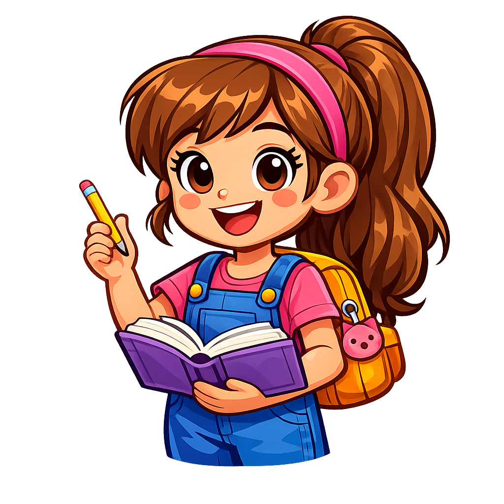
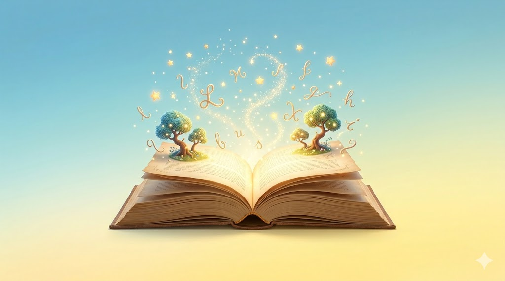
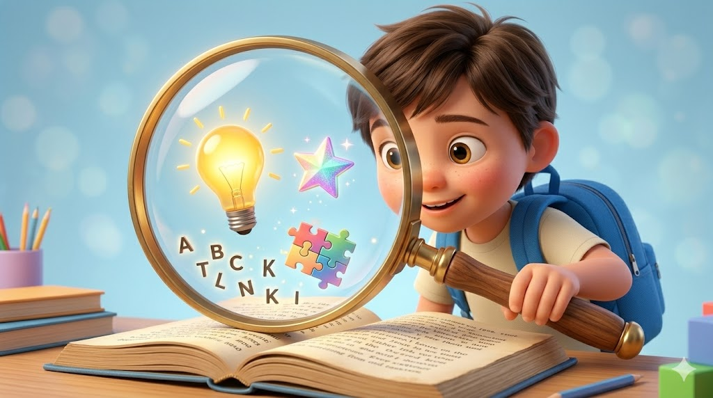
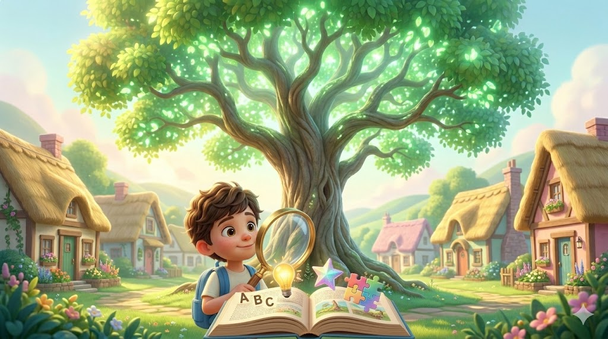
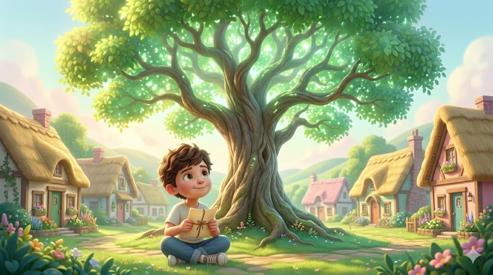
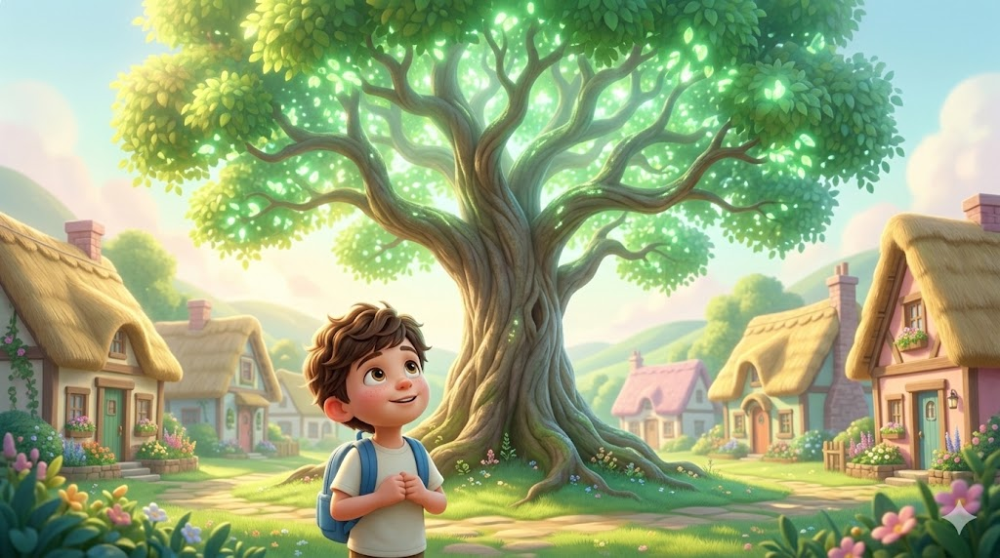

Descubre cómo entender mejor lo que lees mientras juegas y aprendes.
Desarrollar habilidades de comprensión lectora mediante recursos interactivos.

La comprensión lectora es la capacidad de entender, interpretar y analizar un texto. No consiste únicamente en leer palabras, sino en comprender el mensaje que el autor desea transmitir.
El sábado por la mañana Sofía visitó el parque.
Jugó en los columpios y corrió por los jardines.
El parque es importante porque permite divertirse, hacer ejercicio y convivir.
El lugar tiene bancas y una fuente.

En los valles más profundos donde el mapa parecía perderse entre montañas, se encontraba un pequeño **pueblo** llamado Valle Serena. Sus calles estaban empedradas y las mañanas siempre olían a pino y tierra mojada. En este lugar vivía Mateo, un niño de ocho años con una energía inagotable y un **suéter** de rayas que siempre andaba alborotado. A Mateo le fascinaba pasar las tardes al aire libre; construía fuertes con ramas en el **jardín**, armaba torres gigantescas con bloques de madera y corría tras las mariposas. Sin embargo, tenía un gran problema: detestaba los libros. Para él, las letras impresas eran como pequeñas hormigas negras atrapadas en hojas blancas, un laberinto aburrido que no ofrecía ninguna emoción.
Todo cambió por completo durante una tarde lluviosa de otoño, de esas en las que el viento golpea los cristales. Su abuelo, un hombre sabio de ojos amables, le pidió un favor especial: subir a buscar una **caja** de herramientas olvidada en el rincón más alejado del **desván**. Mateo subió con cuidado los viejos escalones de caracol, los cuales crujían bajo sus zapatos a cada paso. El lugar estaba repleto de antigüedades, baúles polvorientos y un viejo **reloj** de péndulo que había dejado de sonar hacía muchos años. Mientras buscaba entre los objetos, una **lámpara** rota comenzó a brillar con un destello dorado que se filtró por el ventanal, llamando de inmediato su atención.
Al limpiar el vidrio con la manga para ver de dónde provenía ese brillo, Mateo quedó completamente paralizado. A lo lejos, en la colina más alta del horizonte, el majestuoso **árbol** Esperanza, un roble milenario del que su abuelo siempre le contaba leyendas, brillaba con una intensa luz verde y dorada que cortaba la niebla gris de la tarde. Olvidando por completo las herramientas y la **lluvia**, el niño bajó corriendo las escaleras, abrió la puerta principal de la casa y se adentró en el **bosque** con el corazón latiéndole a mil por hora, empujado por una curiosidad que jamás había experimentado en su vida.
El viento soplaba con fuerza y las hojas secas bailaban a su alrededor, pero Mateo no se detuvo hasta llegar al pie del gigante de madera. Allí, justo en el centro del tronco donde la corteza se abría como una pequeña cueva secreta, descubrió un **cofre** de bronce entreabierto. No contenía monedas de oro, ni joyas, ni un **mapa** de piratas; en su lugar, descansaba un antiguo y pesado **libro** con lomo de cuero gastado y esquinas protegidas por relieves metálicos. Con manos temblorosas por la emoción, Mateo lo tomó entre sus brazos, se sentó sobre la hierba y pasó la primera página.
En ese instante, el bosque entero guardó un silencio sagrado y una energía increíble brotó de las páginas abiertas. La tinta negra comenzó a despegarse del papel, transformándose en figuras tridimensionales de luz que flotaban en el aire. Ante sus ojos maravillados, una densa nube blanca se extendió por el suelo, convirtiéndose en un océano flotante de algodón. Navegando sobre ese mar de nubes, apareció un diminuto e intrincado **barco** de madera fina, cuyas velas translúcidas brillaban con los colores del arcoíris mientras avanzaba con elegancia. Mateo soltó una carcajada de pura felicidad al ver que, mientras fijaba la vista en el texto, el cielo de la proyección se llenaba de miles de **estrellas** parpadeantes que giraban formando figuras de dragones y castillos.
Una brillante **mariposa** hecha de letras cursivas revoloteó cerca de su rostro antes de transformarse en un pequeño **pergamino** dorado que cayó directamente sobre sus manos. Con mucho cuidado, el niño desenrolló el mensaje y leyó una inscripción que se grabaría en su mente para siempre: "La lectura no es una tarea aburrida, es la **llave** secreta que tu mente necesita para abrir las puertas de cualquier universo imaginable". Al pronunciar estas palabras en voz alta, una ráfaga de viento templado sopló a su alrededor, la **magia** regresó suavemente al interior del texto y el portón de la fantasía se cerró. Mateo abrazó el objeto contra su pecho; finalmente había comprendido que los relatos no eran prisiones de papel, sino los portales más maravillosos jamás creados.
✨ Palabras clave reales encontradas: 0 de 10 ✨


Has completado esta aventura de comprensión lectora. Sigue leyendo todos los días para descubrir nuevos conocimientos y aventuras.